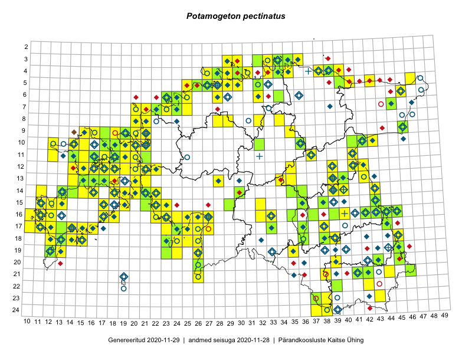

Potamogeton pectinatus — kamm-penikeel
Kaardile koondatud taksonid: Potamogeton pectinatus L. (155); Stuckenia pectinata (L.) Börner (6)

Kaart põhineb 161 kirjel, neist:
vaatlusi 97
eksemplare 64
Kaasaegsed1 leiukohad asuvad 115 ruudus.
Andmed “Eesti taimede levikuatlasest”,2 sulgudes ruutude arv:3
● 1971–2005 (181)
○ 1921–1970 (25)
△ kuni 1920 (0)
+ hävinud (0)
? kaheldav (0)
Lisaruudud teistest andmebaasidest:4
ELF: 2006– . . . (0)
PKÜ: 2006– . . . (0)
ELF: 1971–2005 (1)
PKÜ: 1997–2005 (2)
| Ruut | Vaatleja(d) | Vaatlusaeg | Kirje PlutoFis |
|---|---|---|---|
| 10-17 | Toomas Kukk, Eerik Leibak | 2015-08-12 | ruut/ala: Potamogeton pectinatus L. |
| 09-15 | Toomas Kukk, Eerik Leibak | 2015-08-11 | ruut/ala: Potamogeton pectinatus L. |
| 20-45 | Katrit Karus, Tõnu Feldmann | 2015-07-27 | ruut/ala: Potamogeton pectinatus L. |
| 16-32 | Tõnu Feldmann, Katrit Karus | 2015-07-31 | ruut/ala: Potamogeton pectinatus L. |
| 15-32 | Katrit Karus, Tõnu Feldmann | 2015-07-31 | ruut/ala: Potamogeton pectinatus L. |
| 13-35 | Katrit Karus, Tõnu Feldmann | 2015-08-05 | ruut/ala: Potamogeton pectinatus L. |
| 13-34 | Katrit Karus, Tõnu Feldmann | 2015-08-03 | ruut/ala: Potamogeton pectinatus L. |
| 06-32 | Katrit Karus, Tõnu Feldmann | 2015-08-04 | ruut/ala: Potamogeton pectinatus L. |
| 15-23 | Indrek Tammekänd, Irja Tammekänd | 2015-08-02 | ruut/ala: Potamogeton pectinatus L. |
| 19-13 | Oliver Parrest | 2015-07-01 | ruut/ala: Potamogeton pectinatus L. |
| 24-37 | Eeva-Maria Jeletsky, Tarmo Niitla | 2015-07-16 | ruut/ala: Potamogeton pectinatus L. |
| 24-38 | Eeva-Maria Jeletsky, Tarmo Niitla | 2015-07-16 | ruut/ala: Potamogeton pectinatus L. |
| 17-12 | Mari Reitalu | 2015-08-11 | ruut/ala: Potamogeton pectinatus L. |
| 16-10 | Mari Reitalu, Oliver Parrest | 2015-08-04 | ruut/ala: Potamogeton pectinatus L. |
| 16-12 | Mari Reitalu, Triin Reitalu | 2015-08-18 | ruut/ala: Potamogeton pectinatus L. |
| 17-12 | Mari Reitalu, Triin Reitalu | 2015-07-22 | ruut/ala: Potamogeton pectinatus L. |
| 16-11 | Triin Reitalu, Mari Reitalu | 2015-08-09 | ruut/ala: Potamogeton pectinatus L. |
| 17-11 | Mari Reitalu, Triin Reitalu | 2015-08-05 | ruut/ala: Potamogeton pectinatus L. |
| 16-40 | Kadi Palmik, Helle Mäemets | 2015-07-22 | ruut/ala: Potamogeton pectinatus L. |
| 16-39 | Kadi Palmik, Helle Mäemets | 2015-07-22 | ruut/ala: Potamogeton pectinatus L. |
| 09-35 | Kadi Palmik, Helle Mäemets | 2015-07-21 | ruut/ala: Potamogeton pectinatus L. |
| 15-36 | Helle Mäemets, Mare Leis | 2015-07-06 | ruut/ala: Potamogeton pectinatus L. |
| 03-30 | Mari Reitalu, Tõnu Ploompuu, Ott Luuk, Peedu Saar | 2014-06-01 | ruut/ala: Potamogeton pectinatus L. |
| 10-20 | Tõnu Ploompuu, Anna-Grete Rebane, Hanna-Eliisa Luts | 2015-07-20 | ruut/ala: Potamogeton pectinatus L. |
| 16-11 | Mari Reitalu, Triin Reitalu | 2015-08-09 | ruut/ala: Potamogeton pectinatus L. |
| 11-20 | Hanna-Eliisa Luts, Tõnu Ploompuu | 2015-08-13 | ruut/ala: Potamogeton pectinatus L. |
| 09-21 | Kadi-Liis Kesler, Tõnu Ploompuu | 2015-07-14 | ruut/ala: Potamogeton pectinatus L. |
| 10-21 | Tõnu Ploompuu | 2015-08-21 | ruut/ala: Potamogeton pectinatus L. |
| 15-19 | Mari Reitalu, Triin Reitalu | 2016-06-30 | ruut/ala: Potamogeton pectinatus L. |
| 20-26 | Sirje Azarov, Indrek Tammekänd | 2016-07-18 | ruut/ala: Potamogeton pectinatus L. |
| 21-26 | Sirje Azarov, Indrek Tammekänd | 2016-07-18 | ruut/ala: Potamogeton pectinatus L. |
| 14-19 | Mari Reitalu, Sirje Azarov | 2016-08-18 | ruut/ala: Potamogeton pectinatus L. |
| 16-27 | Tiit Hallikma, Tõnu Ploompuu | 2016-06-20 | ruut/ala: Potamogeton pectinatus L. |
| 07-25 | Helle Mäemets, Tiina Elvisto | 2016-07-05 | ruut/ala: Potamogeton pectinatus L. |
| 17-24 | Tiit Hallikma, Tõnu Ploompuu | 2016-07-06 | ruut/ala: Potamogeton pectinatus L. |
| 17-25 | Tiit Hallikma, Tõnu Ploompuu | 2016-07-06 | ruut/ala: Potamogeton pectinatus L. |
| 18-12 | Toomas Kukk, Meeli Mesipuu, Mari Reitalu | 2016-10-07 | ruut/ala: Potamogeton pectinatus L. |
| 09-20 | Kadi-Liis Kesler | 2015-06-25 | ruut/ala: Potamogeton pectinatus L. |
| 04-39 | Hannes Pehlak, Toomas Kukk, Susanna Vain | 2016-07-28 | ruut/ala: Potamogeton pectinatus L. |
| 16-27 | Indrek Tammekänd | 2015-05-13 | ruut/ala: Potamogeton pectinatus L. |
| 17-23 | Indrek Tammekänd, Eike Vunk | 2017-07-20 | ruut/ala: Potamogeton pectinatus L. |
| 17-27 | Indrek Tammekänd | 2016-07-12 | ruut/ala: Potamogeton pectinatus L. |
| 17-24 | Indrek Tammekänd, Ly Tammekänd | 2015-09-29 | ruut/ala: Potamogeton pectinatus L. |
| 17-26 | Indrek Tammekänd | 2016-07-25 | ruut/ala: Potamogeton pectinatus L. |
| 07-23 | Mari Reitalu, Indrek Tammekänd | 2017-08-10 | ruut/ala: Potamogeton pectinatus L. |
| 12-15 | Toomas Kukk, Indrek Tammekänd | 2017-09-13 | ruut/ala: Potamogeton pectinatus L. |
| 10-12 | Toomas Kukk, Indrek Tammekänd | 2017-09-12 | ruut/ala: Potamogeton pectinatus L. |
| 12-17 | Toomas Kukk, Indrek Tammekänd | 2017-09-11 | ruut/ala: Potamogeton pectinatus L. |
| 12-16 | Peedu Saar, Ott Luuk | 2017-09-15 | ruut/ala: Potamogeton pectinatus L. |
| 09-15 | Peedu Saar, Ott Luuk | 2017-09-15 | ruut/ala: Potamogeton pectinatus L. |
| 09-16 | Ott Luuk, Peedu Saar | 2017-09-14 | ruut/ala: Potamogeton pectinatus L. |
| 10-15 | Ott Luuk, Peedu Saar | 2017-09-14 | ruut/ala: Potamogeton pectinatus L. |
| 10-14 | Peedu Saar, Ott Luuk | 2017-09-14 | ruut/ala: Potamogeton pectinatus L. |
| 08-34 | Katrit Karus, Tõnu Feldmann | 2017-07-07 | ruut/ala: Potamogeton pectinatus L. |
| 10-32 | Tõnu Feldmann, Katrit Karus | 2017-07-05 | ruut/ala: Potamogeton pectinatus L. |
| 03-29 | Toomas Kukk | 2017-09-29 | ruut/ala: Potamogeton pectinatus L. |
| 08-29 | Tõnu Feldmann, Katrit Karus | 2017-07-05 | ruut/ala: Potamogeton pectinatus L. |
| 04-38 | Peedu Saar, Toomas Kukk | 2017-09-28 | ruut/ala: Potamogeton pectinatus L. |
| 03-30 | Peedu Saar | 2017-09-29 | ruut/ala: Potamogeton pectinatus L. |
| 08-29 | Ott Luuk, Thea Kull | 2017-08-09 | ruut/ala: Potamogeton pectinatus L. |
| 12-35 | Helle Mäemets, Kadi Palmik | 2017-07-14 | ruut/ala: Potamogeton pectinatus L. |
| 16-26 | Indrek Tammekänd | 2017-09-19 | ruut/ala: Potamogeton pectinatus L. |
| 12-42 | Peedu Saar | 2017-07-24 | ruut/ala: Potamogeton pectinatus L. |
| 18-26 | Indrek Tammekänd | 2015-07-28 | ruut/ala: Potamogeton pectinatus L. |
| 07-22 | Helle Mäemets, Kadi Palmik | 2017-07-15 | ruut/ala: Potamogeton pectinatus L. |
| 16-22 | Indrek Tammekänd | 2017-09-17 | ruut/ala: Potamogeton pectinatus L. |
| 19-26 | Indrek Tammekänd | 2016-06-29 | ruut/ala: Potamogeton pectinatus L. |
| 16-39 | Kadi Palmik, Helle Mäemets | 2015-07-22 | ruut/ala: Potamogeton pectinatus L. |
| 10-36 | Kadi Palmik, Helle Mäemets | 2015-07-21 | ruut/ala: Potamogeton pectinatus L. |
| 12-16 | Peedu Saar, Ott Luuk | 2017-09-15 | punkt: Potamogeton pectinatus L. |
| 05-41 | Katrit Karus, Tõnu Feldmann | 2017-08-09 | ruut/ala: Potamogeton pectinatus L. |
| 05-43 | Katrit Karus, Tõnu Feldmann | 2017-08-09 | ruut/ala: Potamogeton pectinatus L. |
| 04-38 | Peedu Saar, Toomas Kukk | 2017-09-28 | punkt: Potamogeton pectinatus L. |
| 08-28 | Helle Mäemets, Kadi Palmik | 2017-08-03 | ruut/ala: Potamogeton pectinatus L. |
| 17-27 | Elle Meier, Oliver Parrest | 2016-08-19 | punkt: Potamogeton pectinatus L. |
| 17-27 | Elle Meier, Oliver Parrest | 2016-07-19 | punkt: Potamogeton pectinatus L. |
| 20-39 | Ilmar Uibopuu, Marko Vainu, Kadri Kuusksalu | 2018-07-14 | ruut/ala: Potamogeton pectinatus L. |
| 14-20 | Peedu Saar | 2018-09-19 | ruut/ala: Potamogeton pectinatus L. |
| 15-22 | Toomas Kukk, Peedu Saar, Heikki Luhamaa | 2018-09-18 | ruut/ala: Potamogeton pectinatus L. |
| 12-18 | Toomas Kukk, Peeter Pärn | 2018-09-15 | ruut/ala: Potamogeton pectinatus L. |
| 12-18 | Toomas Kukk, Indrek Tammekänd, Peeter Pärn | 2019-06-01 | ruut/ala: Potamogeton pectinatus L. |
| 10-19 | Peedu Saar, Toomas Kukk | 2019-09-18 | ruut/ala: Potamogeton pectinatus L. |
| 09-19 | Toomas Kukk, Peedu Saar | 2019-09-17 | ruut/ala: Potamogeton pectinatus L. |
| 05-28 | Thea Kull | 2019-09-05 | punkt: Potamogeton pectinatus L. |
| 11-17 | Toomas Kukk, Rein Kalamees | 2019-10-05 | ruut/ala: Potamogeton pectinatus L. |
| 23-37 | Peedu Saar, Timo Luhamäe | 2019-07-11 | ruut/ala: Potamogeton pectinatus L. |
| 19-23 | Indrek Tammekänd | 2018-06-01 | ruut/ala: Potamogeton pectinatus L. |
| 18-23 | Indrek Tammekänd | 2018-05-31 | ruut/ala: Potamogeton pectinatus L. |
| 16-24 | Helle Mäemets | 2019-06-28 | punkt: Stuckenia pectinata (L.) Börner |
| 15-11 | Helle Mäemets | 2019-07-03 | punkt: Stuckenia pectinata (L.) Börner |
| 11-37 | Helle Mäemets, Kadi Palmik | 2018-07-11 | ruut/ala: Potamogeton pectinatus L. |
| 15-23 | Helle Mäemets, Kadi Palmik | 2018-08-30 | punkt: Potamogeton pectinatus L. |
| 16-27 | Helle Mäemets | 2019-06-27 | punkt: Stuckenia pectinata (L.) Börner |
| 19-26 | Helle Mäemets | 2019-06-27 | punkt: Stuckenia pectinata (L.) Börner |
| 16-22 | Helle Mäemets | 2019-07-05 | punkt: Stuckenia pectinata (L.) Börner |
| 09-21 | Helle Mäemets | 2019-06-26 | punkt: Stuckenia pectinata (L.) Börner |
| 18-38 | Helle Mäemets, Kadi Palmik | 2018-07-05 | punkt: Potamogeton pectinatus L. |
| 15-38 | J.-M. Habicht | 2006-06-29 | TAM0004145: Potamogeton pectinatus L. |
| 15-38 | J.-M. Habicht | 2006-06-29 | TAM0004146: Potamogeton pectinatus L. |
| 21-46 | J.-M. Habicht | 2010-08-13 | TAM0021042: Potamogeton pectinatus L. |
| 21-46 | J.-M. Habicht | 2010-08-13 | TAM0021043: Potamogeton pectinatus L. |
| 16-42 | Peedu Saar | 2015-08-21 | TAA0116516: Potamogeton pectinatus L. |
| 09-19 | Jana-Maria Habicht | 2014-08-05 | TAM0122511: Potamogeton pectinatus L. |
| 18-13 | Jana-Maria Habicht | 2011-07-08 | TAM0122512: Potamogeton pectinatus L. |
| 05-32 | Jana-Maria Habicht | 2011-11-21 | TAM0122513: Potamogeton pectinatus L. |
| 05-32 | Jana-Maria Habicht | 2011-11-21 | TAM0122514: Potamogeton pectinatus L. |
| 07-22 | Jana-Maria Habicht | 2013-07-19 | TAM0122517: Potamogeton pectinatus L. |
| 17-13 | Peedu Saar, Ott Luuk | 2016-10-08 | TAA0133997: Potamogeton pectinatus L. |
| 19-23 | Peedu Saar, Ott Luuk | 2016-09-21 | TAA0133998: Potamogeton pectinatus L. |
| 19-23 | Peedu Saar, Ott Luuk | 2016-09-21 | TAA0133999: Potamogeton pectinatus L. |
| 18-23 | Peedu Saar, Ott Luuk | 2016-09-21 | TAA0134000: Potamogeton pectinatus L. |
| 13-15 | Peedu Saar, Maret Gerz | 2016-08-11 | TAA0134005: Potamogeton pectinatus L. |
| 05-40 | Peedu Saar, Sander Laherand | 2016-07-28 | TAA0134009: Potamogeton pectinatus L. |
| 05-40 | Peedu Saar, Sander Laherand | 2016-07-28 | TAA0134010: Potamogeton pectinatus L. |
| 16-45 | Toomas Kukk, Eerik Leibak | 2015-07-29 | TAA0135666: Potamogeton pectinatus L. |
| 16-44 | Toomas Kukk, Eerik Leibak | 2015-07-29 | TAA0135676: Potamogeton pectinatus L. |
| 16-44 | Toomas Kukk, Eerik Leibak | 2015-07-29 | TAA0135677: Potamogeton pectinatus L. |
| 14-13 | Toomas Kukk, Meeli Mesipuu, Mari Reitalu | 2016-10-06 | TAA0135727: Potamogeton pectinatus L. |
| 19-12 | Mari Reitalu, Sirje Azarov | 2016-07-31 | TAA0137626: Potamogeton pectinatus L. |
| 04-34 | Toomas Kukk, Hannes Pehlak | 2016-07-26 | TAA0139632: Potamogeton pectinatus L. |
| 04-34 | Toomas Kukk, Hannes Pehlak | 2016-07-26 | TAA0139633: Potamogeton pectinatus L. |
| 13-16 | Ott Luuk, Peedu Saar | 2016-08-31 | TAA0139240: Potamogeton pectinatus L. |
| 13-16 | Ott Luuk, Peedu Saar | 2016-08-31 | TAA0139241: Potamogeton pectinatus L. |
| 16-37 | Thea Kull, Ott Luuk | 2017-08-01 | TAA0142281: Potamogeton pectinatus L. |
| 10-17 | Peedu Saar, Ott Luuk | 2017-09-11 | TAA0141030: Potamogeton pectinatus L. |
| 10-17 | Peedu Saar, Ott Luuk | 2017-09-11 | TAA0141031: Potamogeton pectinatus L. |
| 10-18 | Peedu Saar, Ott Luuk | 2017-09-12 | TAA0141033: Potamogeton pectinatus L. |
| 11-14 | Peedu Saar, Ott Luuk | 2017-09-13 | TAA0141034: Potamogeton pectinatus L. |
| 11-16 | Peedu Saar, Ott Luuk | 2017-09-13 | TAA0141035: Potamogeton pectinatus L. |
| 15-43 | Peedu Saar, Ott Luuk | 2017-08-21 | TAA0141039: Potamogeton pectinatus L. |
| 22-39 | Peedu Saar, Ott Luuk | 2017-07-27 | TAA0141045: Potamogeton pectinatus L. |
| 17-26 | Indrek Tammekänd | 2017-07-23 | TAA0143381: Potamogeton pectinatus L. |
| 10-32 | Ott Luuk | 2017-07-06 | TAA0142875: Potamogeton pectinatus L. |
| 11-21 | Ott Luuk, Ilmar Uibopuu | 2017-08-10 | TAA0142876: Potamogeton pectinatus L. |
| 20-26 | Ott Luuk | 2017-08-30 | TAA0142880: Potamogeton pectinatus L. |
| 07-45 | Helle Mäemets | 2006-07-27 | TAA2001832: Potamogeton pectinatus L. |
| 13-40 | Helle Mäemets | 2007-07-20 | TAA2001847: Potamogeton pectinatus L. |
| 13-17 | Ott Luuk, Peedu Saar | 2016-08-29 | TAA0145610: Potamogeton pectinatus L. |
| 11-18 | Ott Luuk, Peedu Saar | 2017-09-12 | TAA0145615: Potamogeton pectinatus L. |
| 09-17 | Ott Luuk, Peedu Saar | 2017-09-12 | TAA0145616: Potamogeton pectinatus L. |
| 15-21 | Peedu Saar | 2018-09-18 | TAA0146770: Potamogeton pectinatus L. |
| 06-24 | Peedu Saar, Jaak-Albert Metsoja, Mari Metsoja | 2018-07-06 | TAA0146875: Potamogeton pectinatus L. |
| 06-24 | Peedu Saar, Jaak-Albert Metsoja, Mari Metsoja | 2018-07-06 | TAA0146876: Potamogeton pectinatus L. |
| 06-23 | Peedu Saar, Toomas Kukk | 2018-07-05 | TAA0146877: Potamogeton pectinatus L. |
| 07-24 | Kaili Kattai, Thea Kull | 2018-07-04 | TAA0143838: Potamogeton pectinatus L. |
| 14-21 | Katrit Karus | 2011-07-20 | TAA2004057: Potamogeton pectinatus L. |
| 18-38 | Helle Mäemets | 2011-09-09 | TAA2004068: Potamogeton pectinatus L. |
| 16-43 | Helle Mäemets | 2011-08-02 | TAA2004151: Potamogeton pectinatus L. |
| 05-27 | Thea Kull | 2019-09-05 | TAA0148118: Potamogeton pectinatus L. |
| 09-46 | Peedu Saar, Timo Luhamäe | 2019-09-11 | TAA0149503: Potamogeton pectinatus L. |
| 09-46 | Peedu Saar, Timo Luhamäe | 2019-09-11 | TAA0149504: Potamogeton pectinatus L. |
| 09-46 | Peedu Saar, Timo Luhamäe | 2019-09-11 | TAA0149505: Potamogeton pectinatus L. |
| 09-46 | Peedu Saar, Timo Luhamäe | 2019-09-11 | TAA0149506: Potamogeton pectinatus L. |
| 23-37 | Peedu Saar, Timo Luhamäe | 2019-07-11 | TAA0149525: Potamogeton pectinatus L. |
| 23-37 | Peedu Saar, Timo Luhamäe | 2019-07-11 | TAA0149526: Potamogeton pectinatus L. |
| 03-34 | Toomas Kukk, Rein Kalamees | 2019-08-06 | TAA0148701: Potamogeton pectinatus L. |
| 03-34 | Toomas Kukk, Rein Kalamees | 2019-08-06 | TAA0148702: Potamogeton pectinatus L. |
| 03-34 | Toomas Kukk, Rein Kalamees | 2019-08-06 | TAA0148743: Potamogeton pectinatus L. |
| 03-34 | Toomas Kukk, Rein Kalamees | 2019-08-06 | TAA0148744: Potamogeton pectinatus L. |
| 04-34 | Toomas Kukk, Rein Kalamees | 2019-08-06 | TAA0148748: Potamogeton pectinatus L. |
| 21-41 | Indrek Tammekänd, Toomas Kukk | 2019-07-10 | TAA0151765: Potamogeton pectinatus L. |
Kaasaegsed leiukohad (tähistatud värvitud ruutudega) põhinevad peamiselt 2014–2019 välitööandmetel. Väiksemal määral on andmebaasi kantud vanemaid leiuandmeid aastatest 2006–2013.↩︎
Kukk, T., Kull, T., Eesti taimede levikuatlas. Eesti Maaülikool, Põllumajandus- ja Keskkonnainstituut, Tartu, 2005.↩︎
NB! 2005. aasta atlase andmestikus katavad uuemad leiud vanemaid. Näiteks kui liik on ruudus registreeritud 1971–2005, siis pole võimalik öelda, kas ta oli sellest ruudust teada ka enne 1970. aastat. Vana atlase andmetel hävinud ja kaheldavaid leiukohti pole hilisemate (taas)leidude põhjal korrigeeritud.↩︎
Eestimaa Looduse Fondi (ELF) ja Pärandkoosluste Kaitse Ühingu (PKÜ) andmebaasid sisaldavad inventeeritud koosluste kirjeldusi ja liigiloendeid. Neist andmekogudest on kaardile lisatud lisatud vaid need ruudud, millest uue atlase andmekogus taksoni kohta kirjeid veel pole. Kõrvale on jäetud teadaolevalt kaheldavad määrangud. Kaartidel katavad uuema perioodi andmed vanemaid, PKÜ omad ELFi omi. Kattumise tõttu võib kaardil näha olla vähem mingi kategooria ruute kui legendis olev arv näitab. ELFi ja PKÜ andmed ei kajastu hetkel vaatluste tabelis ega ruutude liigiloendites.↩︎